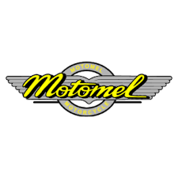
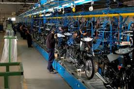
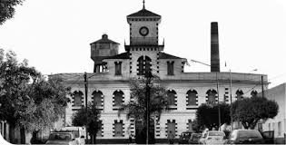
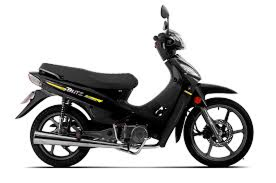

← Volver
Historia de Motomel
Motomel es una marca 100% argentina, fundada en el año 1992 por el Grupo La Emilia S.A., una
empresa con más de 70 años de historia industrial.
La compañía, ubicada en San Nicolás de los Arroyos, provincia de Buenos Aires, comenzó
ensamblando motocicletas bajo licencia y con componentes importados, pero rápidamente
desarrolló una identidad propia.
El objetivo de Motomel fue, desde el inicio, ofrecer vehículos accesibles, confiables y adaptados
al mercado local, en un contexto donde las motos se estaban volviendo una alternativa práctica
de transporte para miles de argentinos.
Gracias a su capacidad de producción y a una fuerte red de distribución, Motomel logró
posicionarse como una de las marcas líderes del país en muy poco tiempo.
Durante los años 2000, Motomel consolidó su crecimiento, ampliando su catálogo con
una amplia variedad de modelos: motos urbanas, scooters, de trabajo, deportivas y de
enduro.
Esto le permitió llegar a todo tipo de usuarios, desde quienes necesitaban una moto
económica para movilizarse hasta los que buscaban aventura o rendimiento.
La planta de La Emilia es el corazón de Motomel.
Cuenta con más de 200.000 m² y una capacidad de producción de más de 100.000
unidades al año, lo que la convierte en la fábrica de motos más grande de Argentina.
Allí se realizan procesos de ensamblaje, pintura, control de calidad y pruebas dinámicas,
cumpliendo con estándares internacionales.
La empresa también genera miles de puestos de trabajo directos e indirectos, impulsando
la economía regional y el desarrollo de proveedores nacionales.
Gracias a esta infraestructura, Motomel exporta parte de su producción a otros países de
Latinoamérica, llevando el sello argentino a nuevos mercados.
Hoy, Motomel continúa evolucionando con una visión moderna e innovadora.
Su catálogo incluye más de 30 modelos activos, con mejoras en tecnología, seguridad
y diseño.
La marca apuesta por la movilidad sustentable, incorporando motos y bicicletas eléctricas,
pensadas para el uso urbano y ecológico.
Modelos como la Motomel Blitz, la Skua 250 Adventure y la Go! E (eléctrica) representan
esta nueva etapa de desarrollo.
Además, Motomel participa activamente en eventos nacionales de motocross y enduro,
manteniendo viva su conexión con el deporte y la pasión por la conducción.
Con más de 30 años de trayectoria, Motomel se consolidó como la marca argentina de motos
más importante, símbolo de trabajo nacional, accesibilidad y progreso tecnológico.